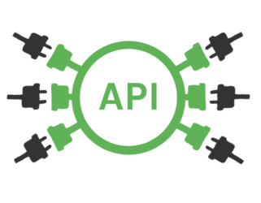
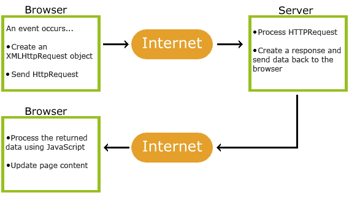

API
全名：「Application Programming Interface」，中文翻作應用程式介面。又稱為應用編程介面，就是軟體系統不同組成部分銜接的約定。
可以讓外部藉由串接我方的 API ，取得我方的資料。
舉例來說：
電腦上有一項標準叫做 USB 介面，所有廠商只要按照這一套標準來開發，就可以保證能夠連接電腦跟 USB 隨身碟
因為有一項標準叫做 USB 介面，當這套標準訂出來以後，所有廠商只要按照這一套標準來開發，就可以保證能夠連接電腦跟 USB 隨身碟。
API 也是這樣，只是變成程式跟程式之間的串接。例如說今天我寫程式需要讀取檔案好了，我要怎麼讀取檔案？讀取檔案是作業系統提供的功能，因此我可以去串接「讀取檔案的 API」，就可以在我的程式裡面也使用這個功能了。
例如說今天我想要讓我的網頁能夠用 Facebook 登入，那要怎麼辦？我就要去串接「Facebook 提供的 API」，就等於說是 Facebook 向外提供給大家的一套介面、一套標準，任何想要接入 Facebook 服務的開發者們，都可以遵循著那套規範拿到自己想要的資料，這個東西就叫做 API。
講到這邊，大家應該對 API 已經有一些 sense 了，我再多舉幾個例子：
- 我想要抓到 flickr 上面的照片，所以我要去串接 flickr 的 API
- Google 要開放讓其他 App 也能用 Google 登入驗證，所以 Google 要提供「Google 登入 API」
- 我要抓 Twitch 上面現在有哪些頻道，所以要串 Twitch AP
取得資料
Ajax
全名：「Asynchronous Javascript And XML」，即非同步 JavaScript 及 XML。
Ajax 通過原生的 XMLHttpRequest 對象發出 Http 請求，得到服務器返回的數據後，在進行處理。
Ajax Works

- 網頁觸發事件(點擊按鈕)
- 創建 XMLHttpRequest 物件
- XMLHttpRequest 物件發出請求給 server
- server 處理請求
- server 送回一個 response 給網頁
- 讀取 response
- 取得的資料，進行處理(渲染網頁)
Get Request
1 | var data = null; |
Post Request
1 | var data = null; |
open(method ,url ,boolean)，第三個參數為確認是否異步通知，默認為 true
如果第一個參數是 POST ，則需要將參數寫在 send() 方法裡面。send() 方法的參數可以是任何想送給服務器的數據。這時數據要以字符串的形式送給服務器，如：name=admin&password=root。
如果不設置請求頭，原生 AJAX 會默認使用 Content-Type 是 text/plain;charset=UTF-8 的方式發送數據。
onreadystatechange property
readyStateHolds the status of the XMLHttpRequest.
- 0: request not initialized (還沒開始)
- 1: server connection established (讀取中)
- 2: request received (已讀取)
- 3: processing request (資訊交換中)
- 4: request finished and response is ready (資訊交換完成)status200: “OK”
- 403: “Forbidden”
- 404: “Page not found”
For a complete list go to the Http Messages ReferencestatusTextReturns the status-text (e.g. “OK” or “Not Found”)
Jquery 中的 Ajax 函數，就是對 xhr 的封裝
1 | const corsUrl = 'https://cors-anywhere.herokuapp.com/'; |
Fetch
Fetch API 提供了工具使操作 http pipeline 更加容易, 像是日常會用到的發送和接送資料都可以使用。並且有 global 的 fetch() 可以直接呼叫, 使開發能夠用更簡潔的語法取得非同步資料。
Get Request
1 | fetch('http://opendata2.epa.gov.tw/AQI.json') |
Post Request
1 | fetch(url, { |
fetch 和 jQuery.ajax() 有兩個主要的差異:
fetch() 回傳的 promise 物件, resolve 和 reject 的使用方式有差異, 當遇到 HTTP Status 404, 500 時會使用 resolve 但會將 status 的值從 ok 變為 false， 也就是說，它只會在網路出現問題或是被阻止進行Request(要求)時，才會變成已拒絕(rejected)狀態，其他都是已實現(fulfilled)。
fetch方法預設是不會傳送任何的認証証書(credentials)例如cookie到伺服器上的，如果網站依賴 session 會導致請求回傳未經認證，要加上傳送cookie可以用fetch(url, {credentials: ‘include’})的語法來設置。
developers-google
MDN — Fetch
Gitbooks — ES6
MDN — XMLHttpRequest
《你不知道的 XMLHttpRequest》
fetch API 和 Ajax（XMLHttpRequest）的差异
- Post title：【API】Ajax & Fetch 取得資料
- Post author：Neil Yang
- Create time：2019-06-11 00:00:00
- Post link：https://des86532.github.io/2019/06/11/API/ajax-and-fetch/
- Copyright Notice：All articles in this blog are licensed under BY-NC-SA unless stating additionally.